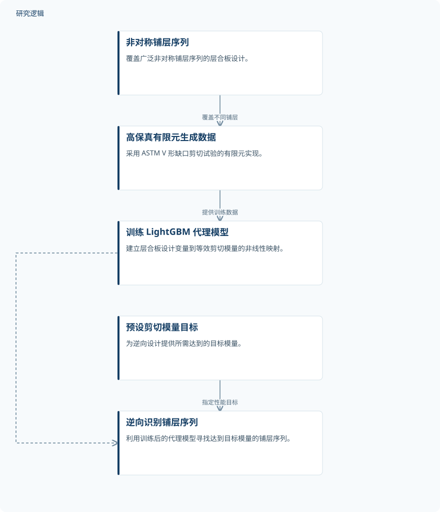

摘要解读
非对称层合板弹性系数确定的机器学习逆向方法
Machine learning-based inverse method for determining elastic coefficients of unsymmetric laminates
解读更新 2026-10-30 10:00 · 依据公开摘要整理，未核验全文细节
非对称复合材料层合板的等效剪切模量难以高效确定。这项研究用有限元数据训练机器学习代理模型，再由目标模量反推铺层序列，为理解铺层结构与剪切性能之间的关系提供了一条计算路径。
文章目录
非对称铺层为何增加表征难度
确定复合材料层合板的等效弹性系数，是结构力学与材料工程中的基础问题。对于非对称层合板，膜内、弯曲与剪切响应之间存在耦合，使解析表征更加困难，也增加了计算负担。
本文聚焦其中的等效剪切模量，而非一次性识别全部弹性系数。研究关注的不只是给定铺层具有什么性能，还包括能否从指定的剪切模量出发，寻找相应的铺层序列。
从剪切试验仿真到目标铺层反求
作者采用 ASTM V 形缺口剪切试验的高保真有限元实现，生成覆盖广泛非对称铺层序列的数据集。这里的数据来源是试验形式的数值仿真，不能据此理解为已经完成同等范围的实体试验。
随后，研究训练轻量级梯度提升机（LightGBM），作为连接层合板设计变量与等效剪切模量的非线性代理模型。训练后的模型再被用于逆向设计框架，以寻找达到预设剪切模量目标的铺层序列。
依据摘要整理的剪切模量逆向设计流程


仅概括摘要明确陈述的数据生成、代理建模与逆向设计关系，不代表论文原图，也不补充未报告的算法配置。
下载 SVG图示关系说明
实线表示相邻阶段的信息流，虚线表示跨阶段联系或反馈。
非对称铺层序列 → 高保真有限元生成数据：覆盖不同铺层；高保真有限元生成数据 → 训练 LightGBM 代理模型：提供训练数据；训练 LightGBM 代理模型 → 逆向识别铺层序列：用于逆向设计；预设剪切模量目标 → 逆向识别铺层序列：指定性能目标
摘要报告了降本与结构—性能关系认识
摘要报告，相较于传统试错式有限元分析，该方法显著降低了计算成本，并为理解层合板构型与有效剪切行为之间的关系提供了新认识。这些是作者在摘要中给出的定性结论，当前资料不足以量化其幅度。
研究将设计变量到模量的正向代理映射用于目标性能驱动的铺层识别。不过，摘要没有列出具体目标值、对应铺层方案或达到目标的误差，因此不能进一步判断反求结果的精度与稳定性。
数据规模、比较口径与验证范围仍待核对
本解读仅依据所提供的完整摘要。摘要未报告数据集规模、材料体系、铺层参数范围及训练与测试划分，也未给出预测误差和计算成本的具体比较口径，因而无法判断模型对未见铺层的泛化能力或实际节省的计算量。
摘要也未交代实体试验验证、逆向结果复核及不同目标模量下的适用范围。这些属于当前资料无法判断的信息，不意味着论文没有开展相关工作；尤其不能把仿真代理模型的用途直接延伸为已验证的工程可靠性。
阅读启发：区分预测准确与反求可信
阅读启发：值得继续关注的是，代理模型对模量的预测能力，如何支撑逆向铺层结果的可信度。进一步阅读时，可核对候选铺层是否经过独立复核，以及目标模量是否位于训练数据覆盖范围内，从而理解这条逆向设计路径的适用边界。
以上为本站阅读启发与建议，不是论文已验证的结论。